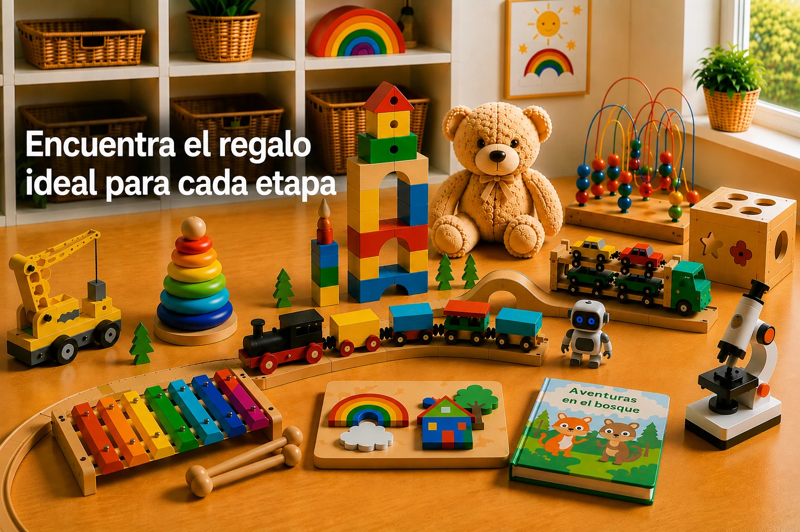

Cinco preguntas rápidas que valen para cualquier edad de la lista anterior.
¿Quieres profundizar antes de elegir?
Nuestra guía Montessori explica el método, cómo elegir juguetes según cada etapa y qué beneficios aporta el aprendizaje a través del juego.